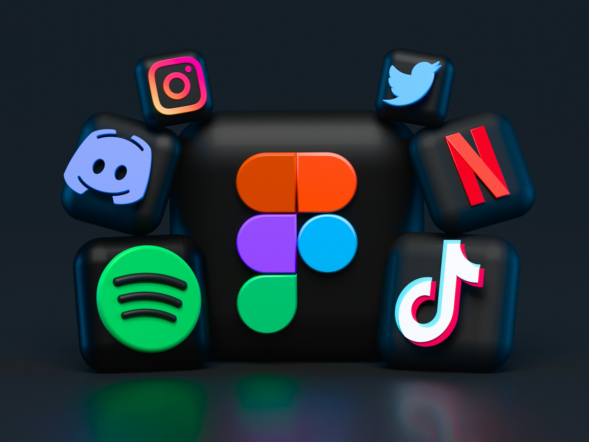

10 de Junio, 2026
Cómo una buena edición transforma un video corto
Reflexiones sobre ritmo, cortes, música y detalles visuales que hacen que un reel se sienta más dinámico y profesional.
Leer más
Me interesa crear imágenes con intención, cuidar la luz y convertir momentos cotidianos en piezas visuales memorables.

Trabajo la limpieza, estructura y atmósfera sonora para que cada episodio se escuche profesional y mantenga la atención.

Diseño ideas para formatos digitales, desde reels y publicaciones hasta piezas audiovisuales listas para compartir.
Reflexiones sobre ritmo, cortes, música y detalles visuales que hacen que un reel se sienta más dinámico y profesional.
Leer más
Ideas para construir una estética visual coherente sin depender únicamente de lo que está de moda en cada plataforma.
Leer más
Una mirada al equilibrio entre calidad técnica, naturalidad de la voz y narrativa sonora en la edición de episodios.
Leer más